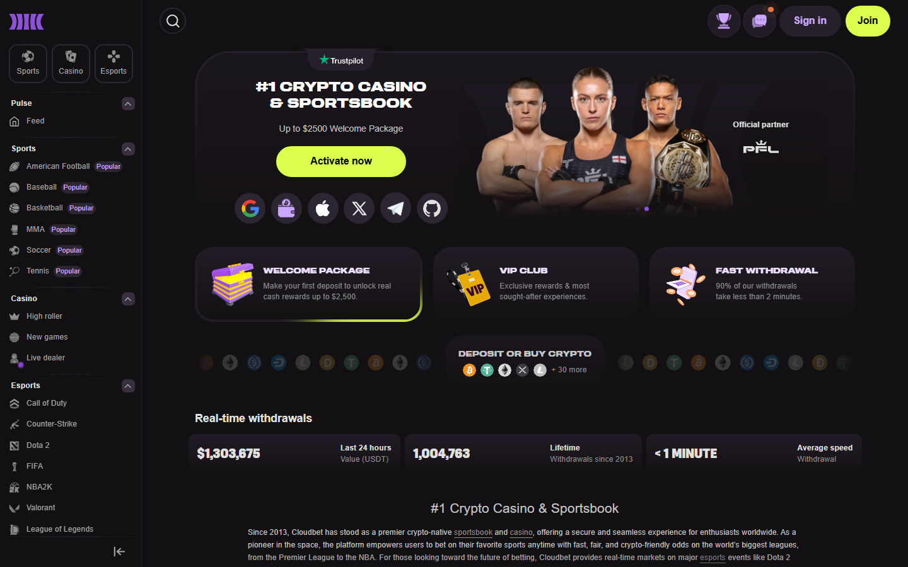
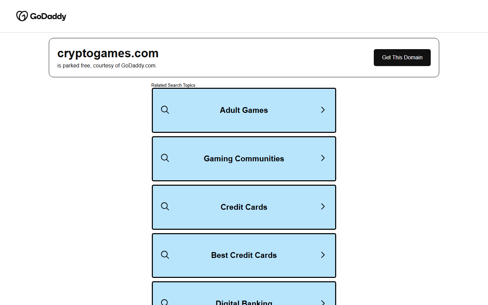
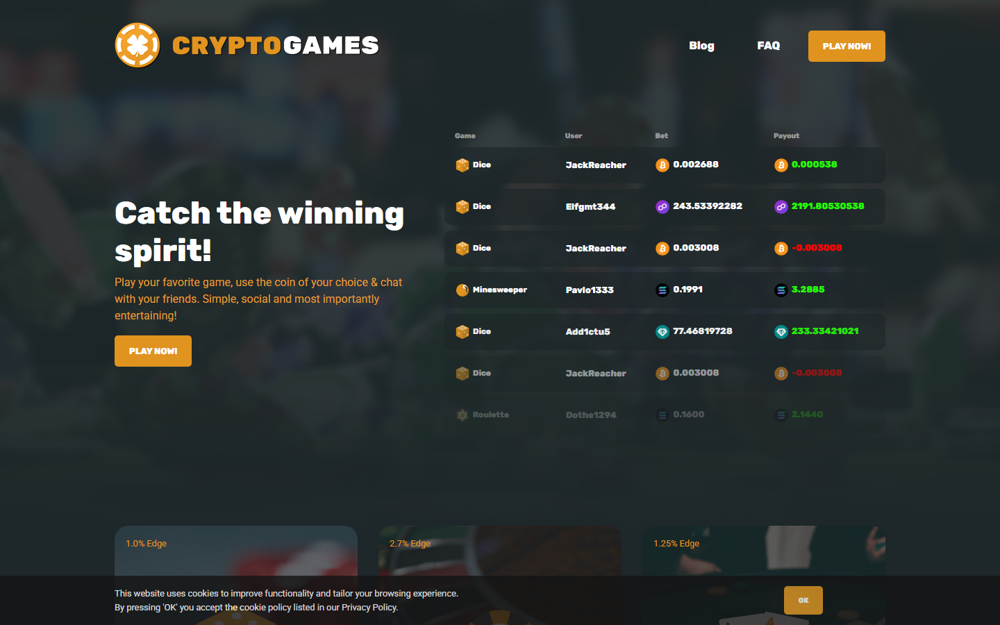
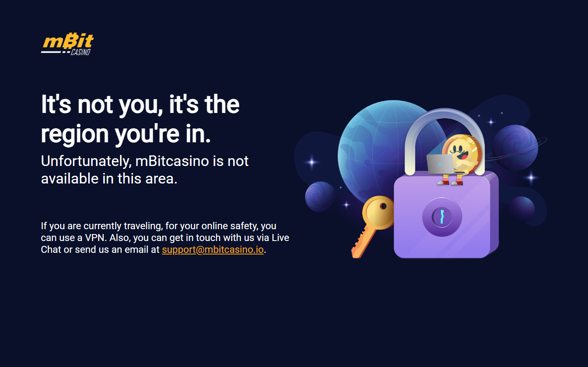
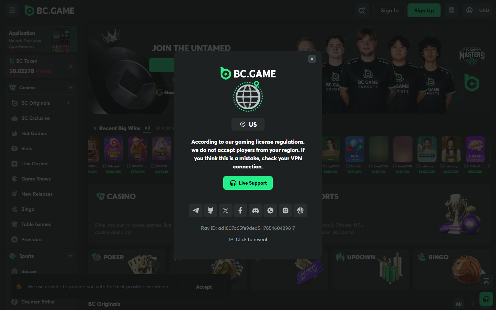
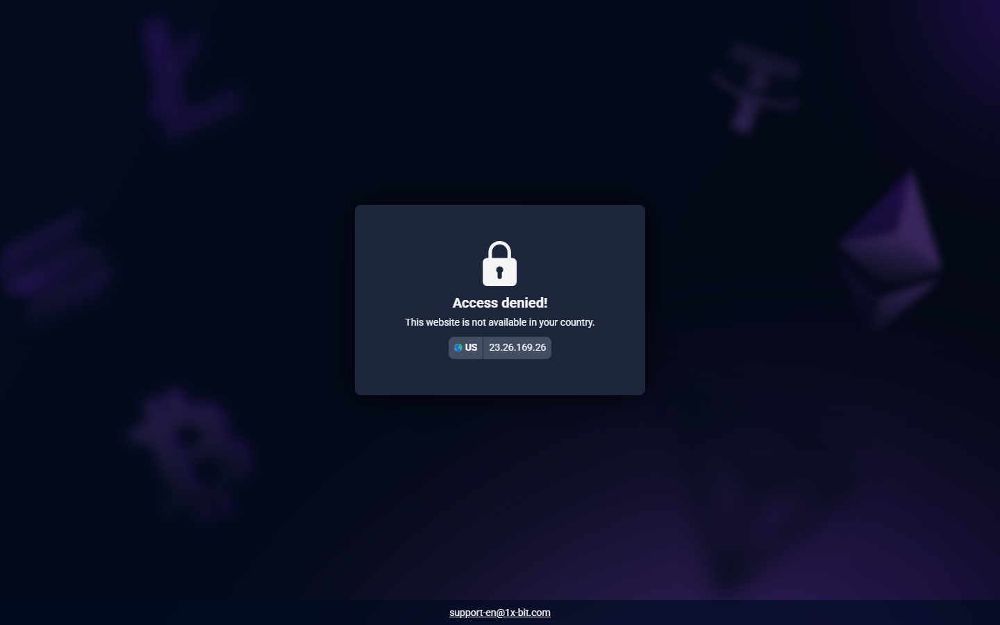

| | |
|---|---|
| Overall winner | Crypto Games (Level 0 KYC + provably fair + BTC-denominated) |
| Best track record | Cloudbet (operating since 2013, 12 years BTC payouts) |
| Best Lightning | mBit Casino (deposit + withdraw via Lightning, sub-second) |
| Best game variety | BC.Game (8,000+ titles, but internal credit model) |
| Best BTC sportsbook | 1xBit (40+ sports, email-only KYC) |
The difference between a Bitcoin casino and a crypto casino matters before you deposit. Bitcoin casinos settle in BTC rather than converting to USD internally. Casinos that accept BTC among 200 other coins but operate in USD-denominated accounts are crypto casinos with BTC support — not Bitcoin casinos.
I reviewed all five platforms in July 2026: navigated each public interface, cross-referenced community withdrawal reports on Bitcointalk and Reddit going back 12+ months, and walked through Lightning, KYC, and bonus claim flows directly.
| Casino | Lightning | BTC Bonus | Withdrawal | KYC | Provably fair | Hold model |
|--------|-----------|-----------|------------|-----|---------------|------------|
| Cloudbet | No | Up to 5 BTC | < 15 min | Level 1 | No | BTC-denominated |
| Crypto Games | No | None | 5–15 min | Level 0 | Yes | BTC-denominated |
| mBit Casino | Yes | 1 BTC + 300 FS | < 30 min / instant LN | Level 1 | No | BTC-denominated |
| BC.Game | No | Up to 5 BTC | 15–30 min | Level 2 | No | Internal credits |
| 1xBit | No | Up to 1 BTC | 20–60 min | Level 1 | No | Internal credits |
| Casino | BTC speed | Lightning | Provably fair | KYC freedom | Track record | Total |
|--------|-----------|-----------|--------------|-------------|--------------|-----------|
| Crypto Games | 9 | 4 | 10 | 10 | 9 | 42/50 |
| mBit Casino | 8 | 9 | 5 | 8 | 7 | 37/50 |
| Cloudbet | 9 | 4 | 5 | 8 | 10 | 36/50 |
| BC.Game | 8 | 4 | 5 | 6 | 8 | 31/50 |
| 1xBit | 7 | 4 | 4 | 8 | 7 | 30/50 |
Most “Bitcoin casinos” convert your BTC to USD internally the moment you deposit. A true BTC-denominated casino maintains your balance in BTC throughout — Cloudbet, Crypto Games, and mBit do this. BC.Game and 1xBit use internal credits: your BTC exposure ends at deposit. This distinction rarely appears in comparison articles and matters significantly for Bitcoin holders.
If you are weighing Bitcoin casinos against crypto-general casinos, the best crypto casinos comparison covers that broader landscape. For no-KYC access specifically, see the no-KYC crypto casinos breakdown.
Our pick for: Longest track record, BTC-denominated balance, BTC sportsbook with a 12-year withdrawal history.
Cloudbet has operated since 2013 — across every Bitcoin market cycle. That track record is verifiable through Bitcointalk gambling forum withdrawal confirmations spanning more than a decade.
BTC withdrawals process in under 15 minutes for standard on-chain transactions. The casino maintains BTC-denominated balances throughout your session. The sportsbook covers 30+ sports with BTC-denominated odds. The welcome bonus is 100% up to 5 BTC with a 40x wagering requirement.
Screenshot — Cloudbet (July 2026)
Cloudbet homepage, July 2026 — BTC-denominated balance, 12-year operating history confirmed.A user called yostthibaultp on Reddit describes an account locked with 0.5 BTC inside, citing “suspicious activity” with no evidence provided. This pattern is common to any BTC casino with automated compliance. Test with a small withdrawal before committing a meaningful balance.
“The level up bonuses alone are crazy. Most sites cap out quick, but Cloudbet VIP transfer program makes it feel like there’s always something new to unlock. Plus, their support team actually treats you like a person.”
“Cloudbet VIP truly exceeds expectations. From tailored perks and 24/7 priority support to its seamless crypto-first experience, it’s a standout program that delivers real value for serious players.”
“Easy sign-up. No personal info needed for deposit nor payout. No fees. Reduced juice — line is -108. Awesome live wagering options.”
“Avoid Cloudbet at all costs. They locked my casino account with 0.5 BTC inside claiming ‘suspicious activity’ with zero evidence.”
Our pick for: Level 0 privacy, mathematically provably fair, BTC-denominated balance, no account ever required.
Crypto Games is the Level 0 Bitcoin casino: no account, no email, no registration. The provably fair mechanism uses a server seed and client seed system where you can verify each bet result using publicly available cryptographic proof. No other platform in this comparison offers this level of mathematical verification.
Level 0 KYC — no account, no email, no ID ever required Screenshot — Crypto Games homepage (July 2026)
Crypto Games, July 2026 — no registration, provably fair on all games, BTC balance maintained throughout. Screenshot — Provably fair verification
Every bet result independently verifiable via server/client seed cryptographic proof.“Unique to crypto — built around the provably fair model, not adapted from a fiat casino template.”
“If there are people looking for XMR casinos: fortunejack, bcgame, crypto.games.”
“Played at crypto.games and was not impressed. The games seemed rigged, and I lost my bitcoin quicker than usual.”
Our pick for: Lightning Network users — fastest BTC deposits and withdrawals available in 2026, 1 BTC welcome bonus.
mBit Casino is the Lightning Network leader in this list. Both deposits and withdrawals support Lightning Network, enabling sub-second BTC settlement. For users with a funded Lightning wallet — Phoenix, Wallet of Satoshi, Zeus — the friction of funding mBit is lower than any on-chain BTC casino.
Screenshot — mBit Lightning deposit (July 2026)
mBit Lightning deposit, July 2026 — invoice QR, instant settlement, compatible with Phoenix / Wallet of Satoshi / Zeus.The 35× WR on the 1 BTC bonus is high enough that most casual players will not clear it. At 0.1 BTC bonus ÷ 35× × 0.98 RTP ≈ 0.0028 BTC expected return. Play the Lightning model, not the bonus model, unless you have a high-volume play pattern.
“My favorite is mBit Casino, hands down. They’ve got a huge variety of games, and the instant payouts with crypto are a game-changer.”
“Crypto casinos like mBit are a solid option. No issues with banks, faster withdrawals, and you don’t have to worry as much about state restrictions.”
“Community threads consistently flag the 35× wagering requirement as the main friction point. The ‘1 BTC bonus’ headline obscures a wagering wall most users will never clear at normal deposit sizes.”
Our pick for: Widest game selection of any Bitcoin casino in 2026 — for regular players who want a full-service platform.
BC.Game has 8,000+ slots, 200+ live dealer tables, crash games, sports betting, and native crypto price prediction games.
Depositing BTC converts to BC.Game credits at the current rate. You do not hold BTC during your session. Bitcoin holders who care about maintaining BTC exposure throughout will find Cloudbet or Crypto Games more aligned with that priority.

BC.Game, July 2026 — 8,000+ game titles, crash games, live dealer, sports betting. Internal credit model applies.“I’m playing at crypto casinos since 2017. BCGame is in my top 5 for having all providers, no KYC, and fast withdrawals.”
“I’ve had the best luck with BC Game and Stake. Both publish RTP stats (usually over 96%), and don’t bury you in dead spins. BC.Game’s UI is a bit cleaner too and lets you verify fairness mid-game.”
“BC.Game is a pretty solid choice. It’s not completely anonymous like some others, but it’s easy to use, has a good variety of games, and the bonuses are decent.”
“Been with BC.game but they feel rigged now even after big wins. I prefer no-KYC and instant withdrawals at deposit sizes of $2,000–$20,000.”
Our pick for: BTC sports betting with email-only KYC and the widest sport and league coverage in this list.
1xBit covers 40+ sports with BTC-denominated betting. For BTC holders who primarily want sports betting rather than casino games, 1xBit’s sportsbook breadth and email-only KYC make it the strongest option outside Cloudbet. The hold model is internal credits.
Level 1 KYC — email only, no government ID required for standard play Screenshot — 1xBit Level 1 KYC (July 2026)
1xBit, July 2026 — email-only KYC confirmed. No government ID required for standard play.“I’ve had a good run with 1xBit since it’s all crypto and has crazy betting options. The odds are competitive, and I’ve cashed out without much trouble. Just watch out for the occasional glitch on their mobile site.”
“I’ve had good luck with 1xBit. They’ve got tons of markets, and the withdrawals are painless. Just be ready for a busy interface that takes a sec to get used to.”
“The interface is overwhelming and takes time to navigate past the marketing noise to reach actual betting markets. Community feedback consistently flags the homepage as cluttered.”
mBit via Lightning Network processes in under 1 second. Cloudbet and mBit process on-chain in under 15–30 minutes.
Which Bitcoin casino has no KYC?Crypto Games is Level 0 — no account, no email, no ID ever. Cloudbet, mBit, and 1xBit are Level 1. BC.Game is Level 2.
What is the Lightning Network and which Bitcoin casinos support it?The Lightning Network is a Bitcoin Layer 2 enabling near-instant, near-zero-cost BTC transactions. Only mBit Casino supports Lightning for both deposits and withdrawals as of July 2026.
What is the difference between a Bitcoin casino and a crypto casino?A Bitcoin casino maintains BTC-denominated balances (Cloudbet, Crypto Games, mBit). A crypto casino converts deposits to USD or internal credits (BC.Game, 1xBit).
Are Bitcoin casinos safe?Cloudbet (since 2013) and Crypto Games (since 2014) have the longest verifiable track records. No platform in this list holds a mainstream gambling license.